Eureka, MT
| My in-laws have just finished building a
beautiful home in Eureka, MT that they are going to use as a vacation
rental property. Here is a pictorial tour of the home. For
rental information, please contact Rose at 406-291-3510 |
|
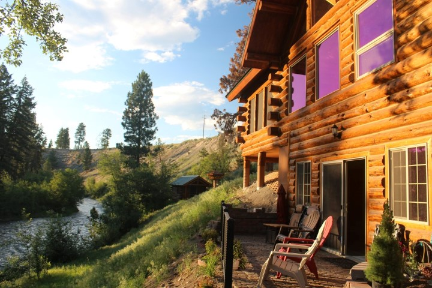 |
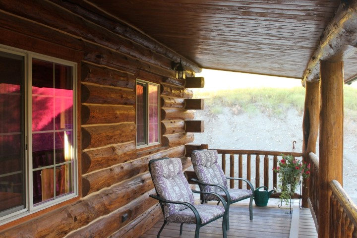 |
| The lodge is positioned just above the Tobacco River, filling it with the relaxing sound of flowing water | Relaxation begins on the deep front porch which is furnished with comfortable chairs |
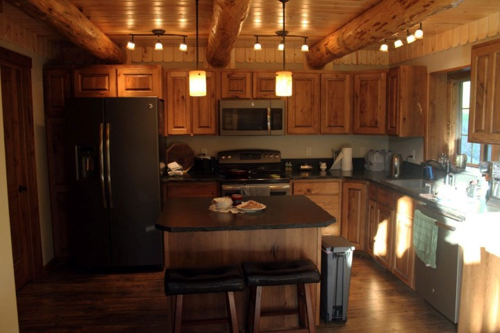 |
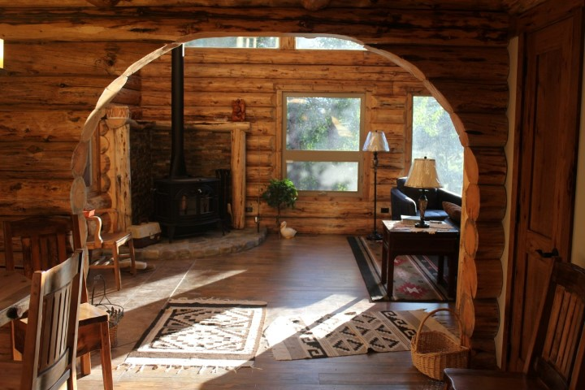 |
| The kitchen is complete with granite countertops, all appliances, and plenty of diningware & cookware | A lovely arch leads from the kitchen/dining area into the living room |
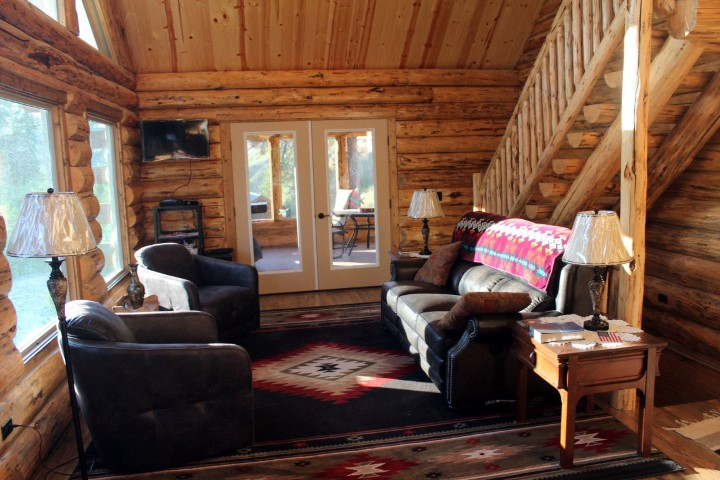 |
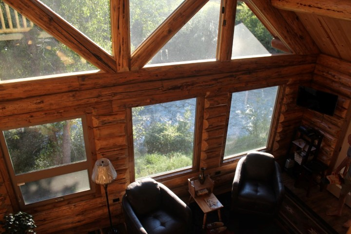 |
| The living room has two recliners and two chairs that swivel for watching the river & wildlife | The view from the living room is of the river and surrounding national forest area |
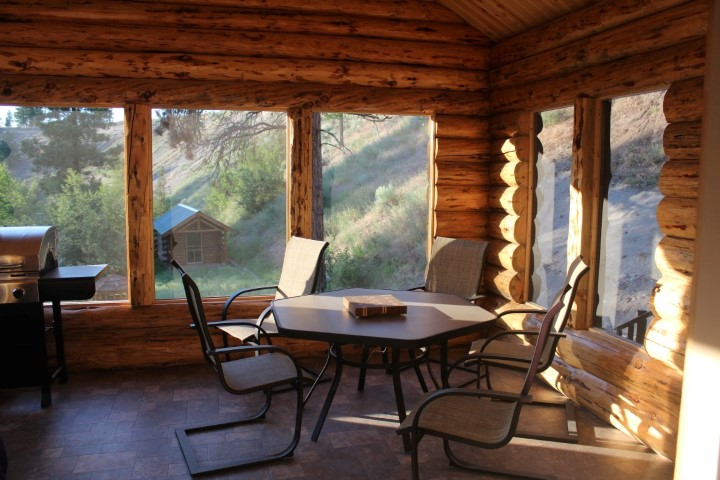 |
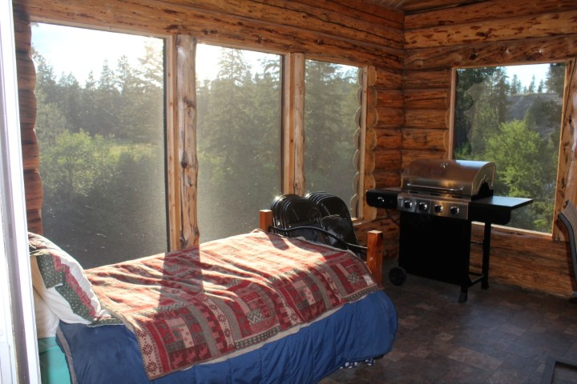 |
| The screened porch, off the living room via French doors, includes ample seating for outdoor dining | The twin bed on the porch is a favorite spot for relaxing beside the river |
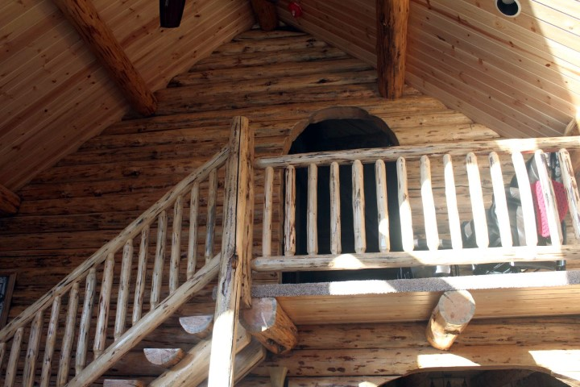 |
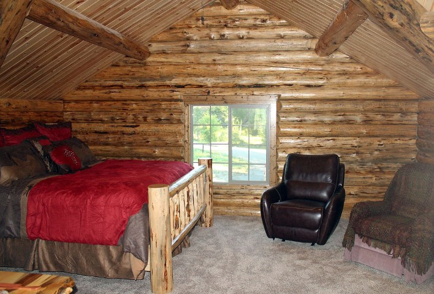 |
| The Master bedroom landing overlooks the living room, with it's own cozy reading nook | The Master includes two recliners |
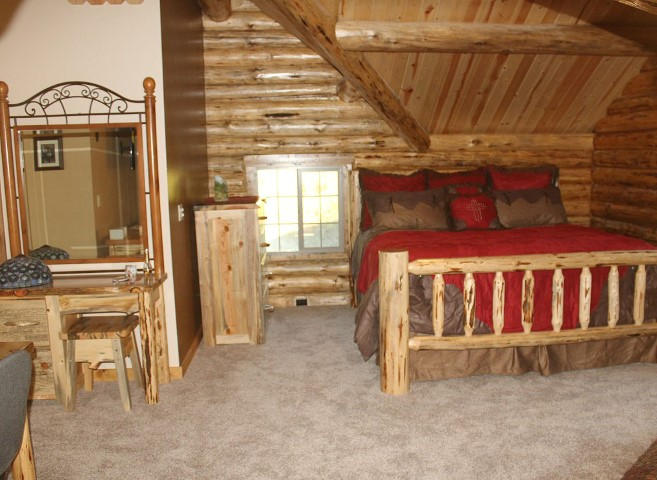 |
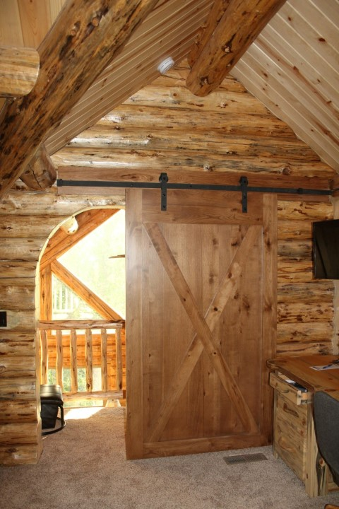 |
| The Master bedroom is a king-sized bed, with a dressing area, desk, and walk-in closet | The beautiful barn-style door provides privacy for the Master suite |
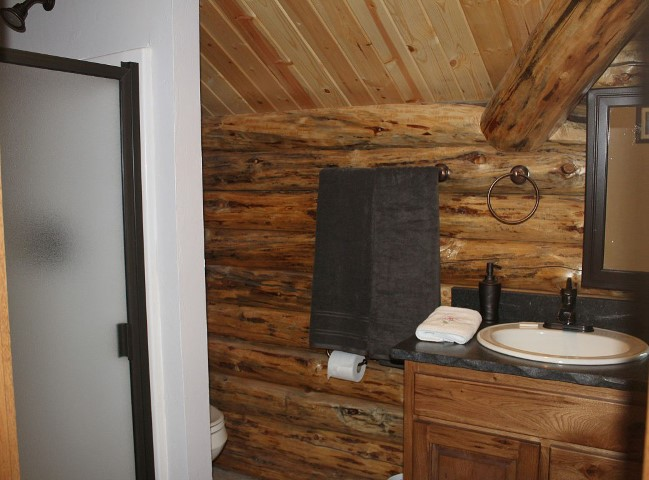 |
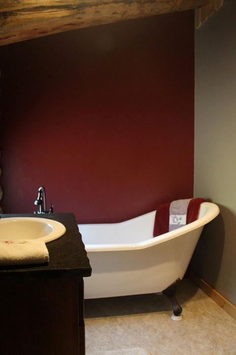 |
| The Master bath includes both a shower and a tub | The tub is an elegant claw-foot, perfect for a nice soak |
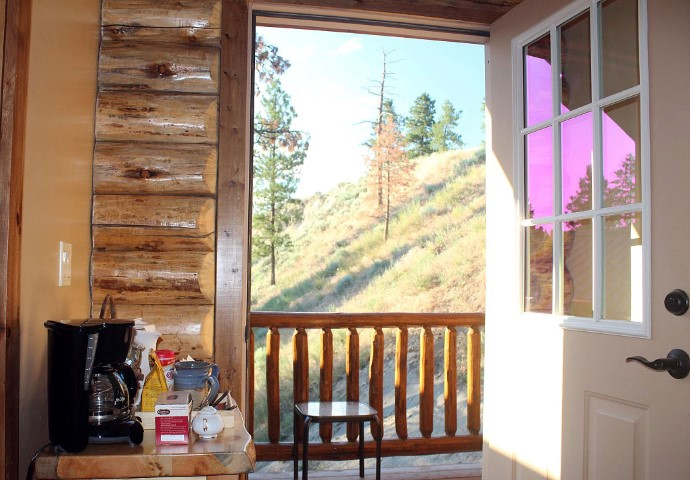 |
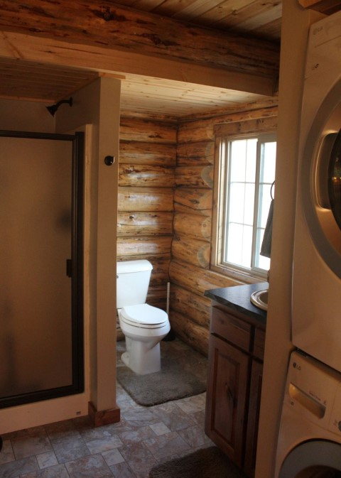 |
| The Master bath also offers a coffee bar and private deck that overlooks the back yard and river | The bath on the main floor contains a shower and full-sized washer and dryer |
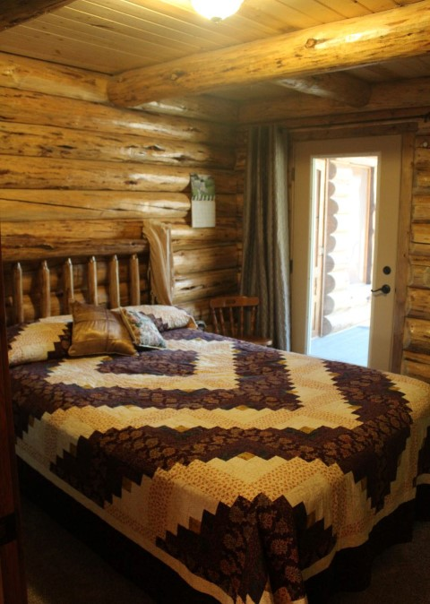 |
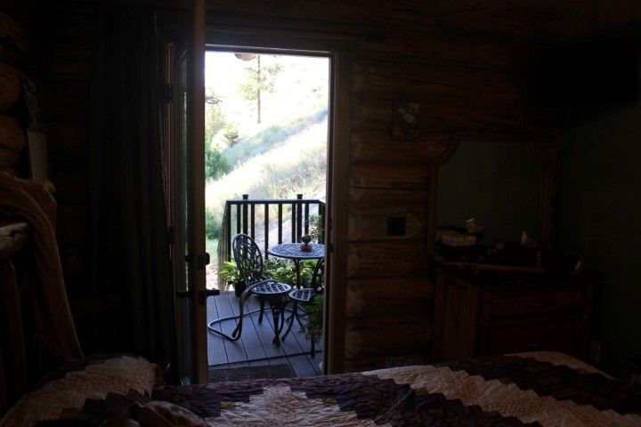 |
| The second bedroom has a glass door leading onto a covered garden porch | The view from the second bedroom onto the porch |
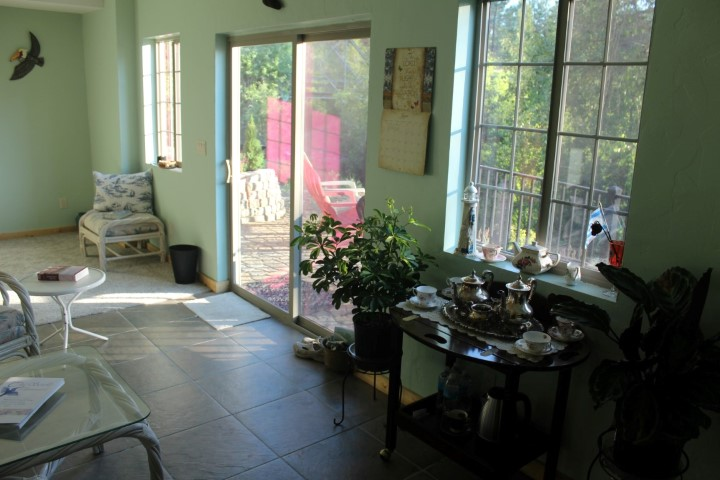 |
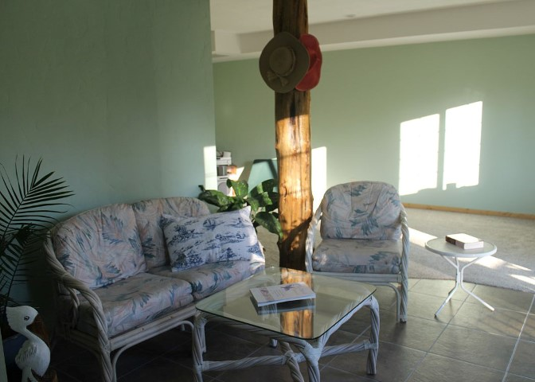 |
| The tea room is another great place to relax and enjoy the sound of the river | Tea room seating area |
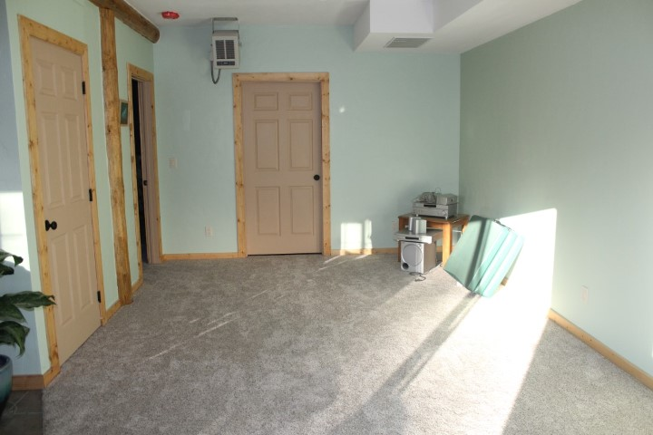 |
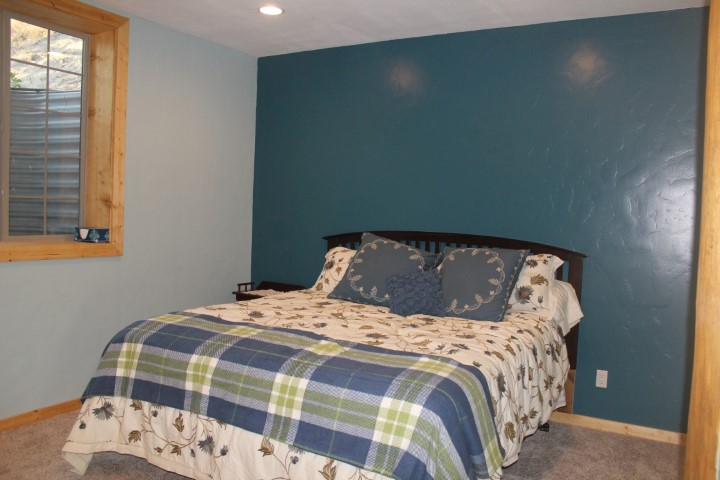 |
| The recreation room provides a lot of space for groups to gather or for kids to play | Bedroom three boasts a California queen bed and a relaxing color pallet |
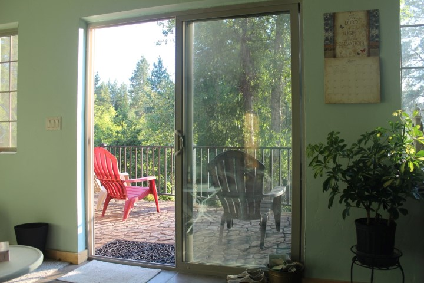 |
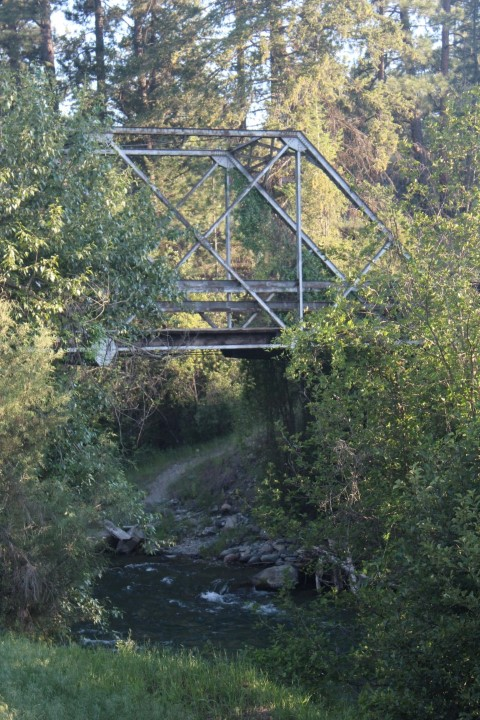 |
| Looking out onto the river overlook patio from the tea room | View of Pidgeon Bridge from the patio |
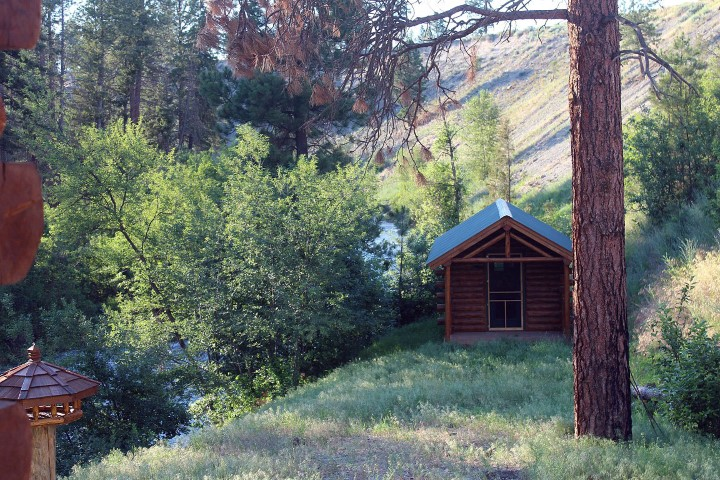 |
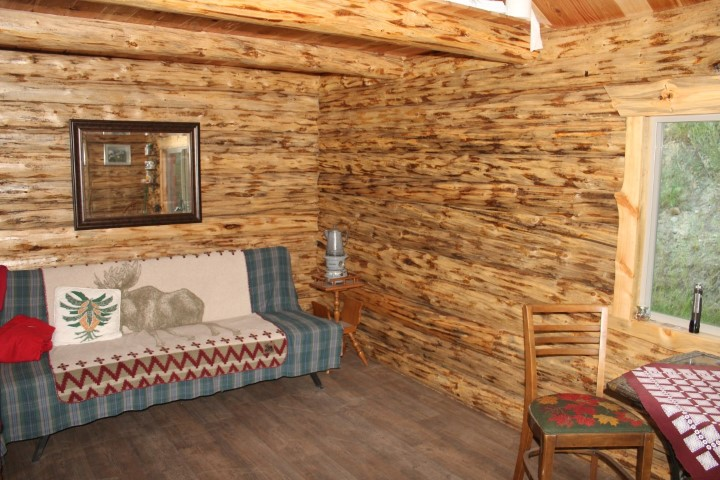 |
| The property also includes a small cabin. It has no restroom or power, but it's not roughing it! | The couch converts to a bed. The cabin also contains a table and chairs. |
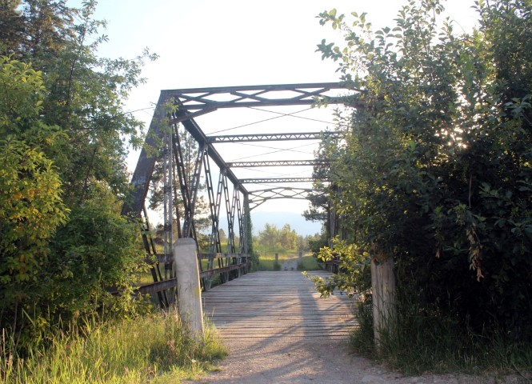 |
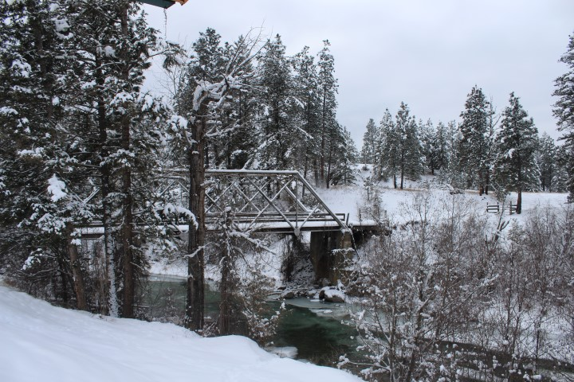 |
| A Rails to Trails hiking and biking trail crosses Pidgeon Bridge, just steps from the lodge | The beauty of the river makes the Mountain River Lodge a great place to visit any time of year |
| Full Cabin Description
This lovely home is a beautiful, new Amish log cabin.
It has 3 bedrooms, 2 full baths, 3-stories, a roomy 2,800 square feet,
plus extra sleeping areas. It is
located by the Tobacco River next to the scenic Old Pidgeon Bridge.
Situated off Highway 37, the cabin is approximately 4 miles west of
Eureka, Montana. It is very close
to The Wilderness Club, Montana�s #1 golf club as rated by Golfweek
magazine. A Rails to Trails hiking
and biking trail crosses the Pidgeon Bridge right in front of the lodge and
continues on to the town of Rexford through the Kootenai National Forest.
One may also fish or float the Tobacco River which runs beside the
cabin. It is a very short drive to
the beautiful Lake Koocanusa. The
Rexford public boat ramp and public beach are 3.5 miles away, or visit
Abayance Bay marina, restaurant, and bar which is only 4 miles away. The kitchen boasts black granite and lovely custom-built
knotty hickory cabinets and island. You�ll
find all the amenities including refrigerator, range, microwave, dishwasher,
and pantry. The kitchen
flows into the dining room which holds a lovely custom-built dining table with
four chairs. The adjacent living room has a couch with two recliners,
two swivel chairs, a wood-burning stove on a beautiful rock hearth, and large
glass windows that overlook Kootenai Forest and the lovely river below.
The view includes a large open space where you will often see deer
feeding or even crossing the Pidgeon Bridge.
French doors lead from the living room into a large screened porch.
The porch includes a patio table with six comfortable chairs, a gas BBQ
grill, and a twin bed � which will become your favorite spot in the house! The second floor of the house is dedicated to the master
suite. The master bedroom is
furnished with Amish-built log furniture with rustic accents.
It hosts a king-sized bed, shower, and a vintage claw-foot tub.
This area includes a coffee and tea bar, just what you need for
enjoying the small covered deck which extends off of the master suite.
The deck is a perfect place to wake up to the sounds of the river
below. The second bedroom is on the main floor.
It has a queen-sized, Amish-built log bed.
This room includes a glass door that opens onto its own deck and garden
area, complete with bird feeder. This
bedroom is located next to the main floor restroom which contains a shower and
stacked washer/dryer. The lower level is a bright, open, daylight basement with
a large rec room. This is also the
location of the third bedroom, a private space with a California king bed.
You will also find a tea room facing the large glass patio doors that
open onto the deck which is just above the river. About 25 feet from the main cabin there is a small
one-room log cabin. This cabin
contains a table and two chairs and a couch that converts into a bed.
There is no bathroom in the small cabin but its proximity to the main
house makes the restrooms there very accessible.
This little cabin would be a great spot for young adults or a quiet
retreat for those seeking solitude. There are TVs without reception equipped with DVD players
in the master and second bedroom, as well as the living room.
You won�t want to use them though as every area of the house is
permeated with the relaxing burble of the river flowing by.
There are so many ways to play in the nearby area, and so many ways to
relax at this home, you won�t want for anything else! |
For rental information, please contact Rose at 406-297-3510 |